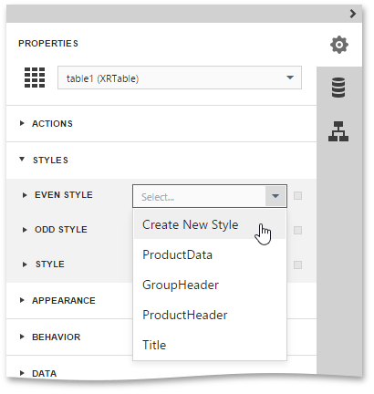
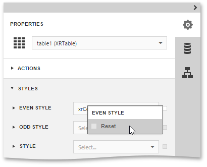
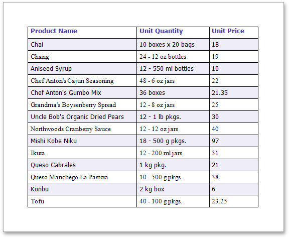

Use Odd and Even Styles
This document describes how to apply odd and even styles to report controls, e.g., to alternate the background color for each record.
To utilize odd and even styles, do the following.
- Create a table report.
Select the detail table and in the Properties Panel, expand the Styles category. Then, invoke the drop-down list for the Even Style property and click Create New Style.

This will create a style and assign it to the control's Even Style.
Now, expand the Even Style section and adjust the required options of the newly created style (e.g. specify the Font and Background Color properties).

If required, perform the same steps, to create and assign an odd style, as well.
To reset all style properties of a report control to their default values, select the control, click the Advanced Options button for the required style (marked with the 'square'  icon) and in the invoked popup menu select Reset.
icon) and in the invoked popup menu select Reset.

Switch your report to the Preview mode, and view the result.
